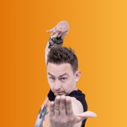
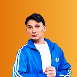

Batch 7 · two new provisional links

Michał PałubskiPraise of both performances at one historical event · 2021-07-01. Source review.

Jasiek BorkowskiPraise of the duo’s performance together · 2021-09-12. Source review.
Each link has one supporting reviewer. These event-scoped opinions do not establish general favorite status. The eight corroborated pairs are unchanged.
Solid: 2+ fans. Dashed: 1 fan. Distance has no similarity meaning; missing links do not imply dislike. The diagram shows 19 links; 14 provisional candidates are hidden by its degree cap.
All ten Batch 7 performers were searched; access failures limited several source checks. Earlier ranks 55–57 remain incomplete. Overall: 67 completed, 33 pending.
Collectors recorded 61 queries and 21 page attempts. Collector B used 28 queries against its individual limit of 24; that overrun is preserved in the report. Four solo reviews were skipped. The Reddit recommendation list adds no preference links.